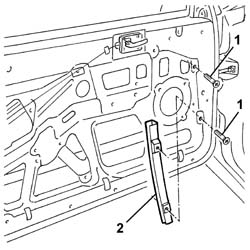

7005D21 front door window front guide - r r
- Path
- Procedures > 70 FITTINGS > 7005 PASSENGER COMPARTMENT FRONT SIDE DOORS > 7005D front side door window glasses > 7005D21 front door window front guide - r r
- Kind
- repair procedure (removal / refitting; the operation number is the code)
- Applies to
- all engines; all production periods
- Interactive page
- https://sloeber94.github.io/elrnDB-a147/en/#/3025663
Applies to: all engines; all production periods
 Removing
Removing
 Refitting
Refitting7005C44 interior handle panel - r r
7005M14 ELECTRIC WINDOWS, REAR VIEW MIRRORS and CENTRAL LOCKING SWITCH unit on driver's front door - R.R. (for the driver's door)
7005M12 passenger side front door electrically operated window switch - r r (for the passenger door)
7040E24 lower courtesy light indoor panel - r+r
7005E08 front side door interior panel r r
7005A04 front side door water guard protection - r r or replace with door panel removed
1. Unscrew the bolts
2. Remove the front window guide.

Applies to: all engines; all production periods
Refitting
RemovingCheck that the guide is undamaged.
Fit the guide.
Tighten the screws.
Check that the window works properly.
7005A04 front side door water guard protection - r r or replace with door panel removed
7005E08 front side door interior panel r r
7040E24 lower courtesy light indoor panel - r+r
7005M12 passenger side front door electrically operated window switch - r r (for the passenger door)
7005M14 ELECTRIC WINDOWS, REAR VIEW MIRRORS and CENTRAL LOCKING SWITCH unit on driver's front door - R.R. (for the driver's door)
Topics linked from this page (7)
- 5570T90 front speaker - r r
- 7005A04 front side door water guard protection - r r or replace with door panel removed
- 7005C44 interior handle panel - r r
- 7005E08 front side door interior panel r r
- 7005M12 passenger side front door electrically operated window switch - r r
- 7005M14 ELECTRIC WINDOWS, REAR VIEW MIRRORS and CENTRAL LOCKING SWITCH unit on driver's front door - R.R.
- 7040E24 lower courtesy light indoor panel - r+r